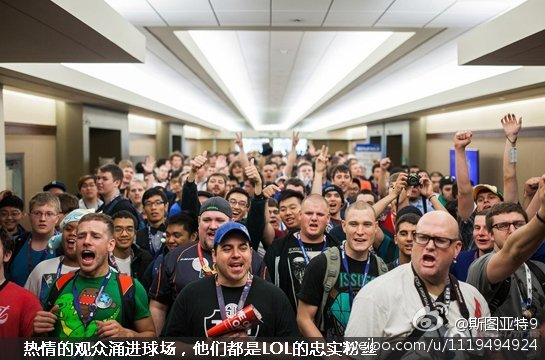
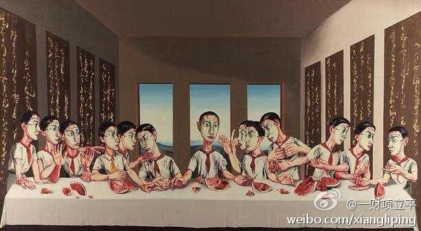

【深度】赢了韩国，16岁电竞少年可挣200万 。“对于我们电竞选手来说，随着年龄的增加会影响到我们大脑的反映……两个人水平相当，年级比我大个三四岁的人明显感觉没我反映快。我自己跟去年比……有时也感觉没有原来快了。”是说这项活动的黄金期是16岁？可怕的活动。 网页链接 
为什么恶劣呢？我觉得挺好的啊。虽然我不认可它有多少艺术价值，但恶劣也无从谈起阿。//@王世颖: 我要转发出来刺激一下搞美术的小伙伴，原作比图片看上去更劣，我以人格保证@孙渣 @曹操大叔 你们幸福吗？//@一财项立平: 7000万港元起拍，1.6亿港元落槌。@大象项立平:这件由达芬奇名作改编的「最后的晚餐」10月份终于要上拍了，耶稣和他的门徒们变成了红领巾，成为了当代艺术对现实的讽喻。老实说我还挺难接受这样的作品的，据说苏富比方面预计这幅＂名作＂将卖出8000万港元以上的价格，大家怎么看？ 
认为美国中小学是实行快乐教育的，应该看看The Atlantic杂志这一期的文章，它批评美国中小学的课后作业太多了（且难而无用）：网页链接 它的腔调很耳熟：人家芬兰孩子每天只有半小时作业。另外说美国中小学过去几十年作业越来越多的原因是老师们“害怕落在东亚学生的后面”。

 网页链接
网页链接